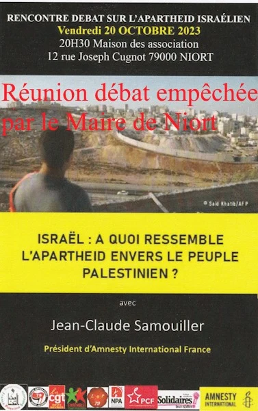

Prise de position fédérale
À Niort, le débat avec Jean-Claude Samouiller ne se tient pas comme prévu
Date indiquée par Facebook · 20 octobre 2023
Repères éditoriaux
Nous avons réagi à la décision municipale qui, selon notre publication du 20 octobre, empêchait la rencontre de se tenir dans les locaux annoncés. Le texte fédéral conserve notre position.
Texte conservé avec la publication
Grave atteinte à la liberté d'expression !
La rencontre-débat prévue ce soir ne pourra se tenir comme prévue, la Mairie de Niort ayant décidé d'interdire la tenue de cette soirée dans des locaux associatifs de la ville de Niort.
Cela s'ajoute à d'autres initiatives interdites par la préfète, les motifs invoqués dans les arrêtés faisant un amalgame entre nos combats politiques, l'antisémitisme et l'apologie du terrorisme.
Pourtant nous dénonçons sans équivoque
- les attaques terroristes du Hamas perpétrées le 7 octobre et exigeons la libération des otages,
- le blocus de Gaza et les crimes de guerre israéliens qui ont déjà fait plus de 3000 morts
- et appelons à la libération de Georges Ibrahim Abdallah plus vieux prisonnier de France emprisonné depuis 40 ans et libérable depuis 26 ans.
Notre combat est un combat pour la paix, la justice sociale et l'unité entre les peuples.

Sources
Archive rouge · export Facebook · AR-0002-FB-01561
À lire aussi · À Niort, le débat avec Jean-Claude Samouiller annoncé pour le 20 octobre